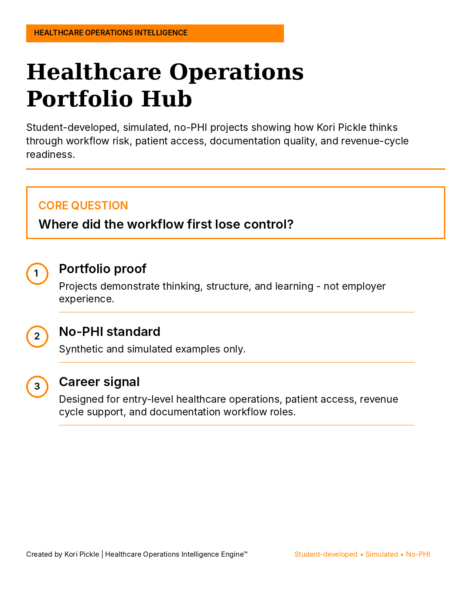
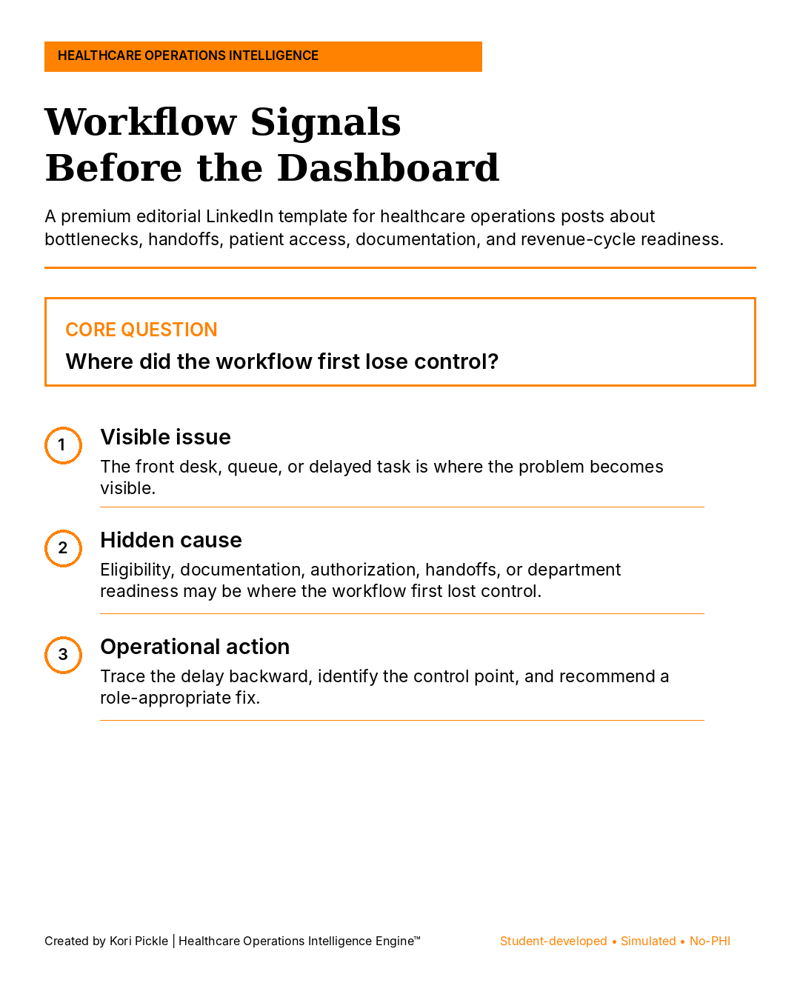
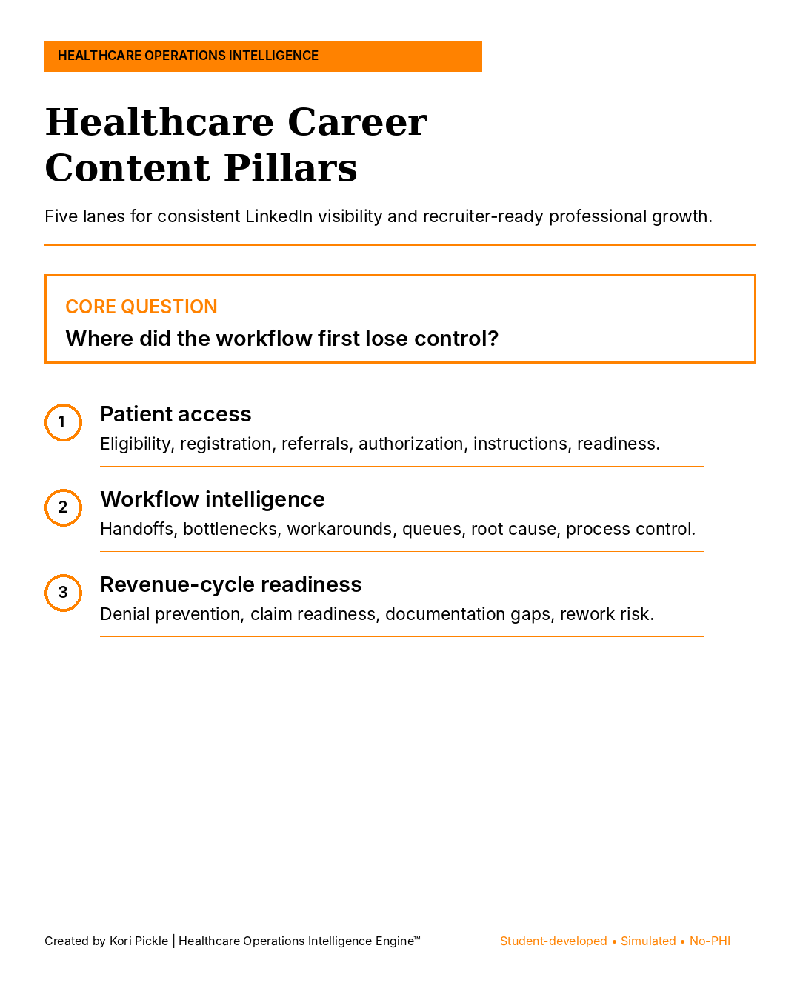
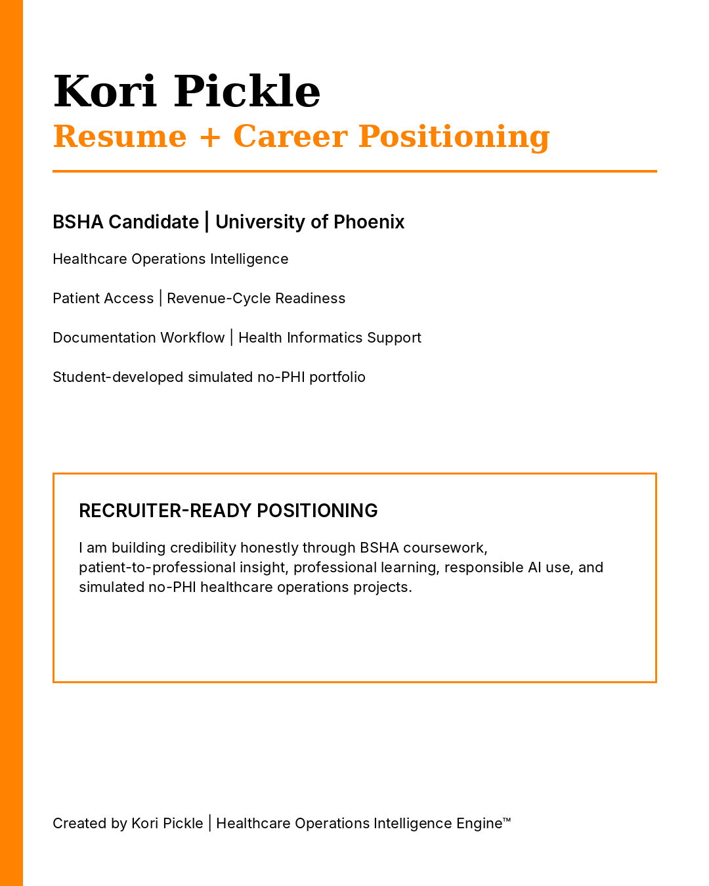

Patient Access Handoff & Closed-Loop Readiness System™
Uses the R4 model—Ready, Route, Receive, Resolve—to examine whether administrative handoffs have clear ownership, acceptance, escalation, and verified closure.
I am Kori Pickle, a BSHA Candidate at University of Phoenix building an honest healthcare operations foundation through coursework, lived patient experience, professional learning, and student-developed simulated projects.
I study where healthcare administrative workflows can lose control—where unclear ownership, missing documentation, weak handoffs, authorization delays, or incomplete follow-up can create patient confusion, staff rework, denial risk, and revenue-cycle pressure.
My goal is to earn an entry-level remote opportunity where careful documentation, systems thinking, patient awareness, and responsible technology use support stronger healthcare operations.

My portfolio turns coursework, lived patient insight, and independent learning into structured healthcare operations projects. Each project demonstrates how I organize a problem, identify the first loss of control, separate facts from assumptions, and recommend role-appropriate next steps.
Created by Kori Pickle, BSHA Candidate. Projects are educational, simulated, and do not use PHI, employer data, payer data, claims data, or real patient records.
Each project uses synthetic scenarios to practice healthcare operations reasoning without claiming access, authority, or employer results.
Uses the R4 model—Ready, Route, Receive, Resolve—to examine whether administrative handoffs have clear ownership, acceptance, escalation, and verified closure.
Organizes simulated authorization status, delay risk, denial reasons, appeal readiness, patient-access impact, and a 30-day improvement plan.
Maps how documentation gaps, eligibility issues, unclear requirements, and missed control points may create rework and denial exposure downstream.
Follows a simulated institutional claim from upstream readiness through X12 837 submission, payer adjudication, X12 835 remittance, payment posting, exception handling, and verified closure. The case identifies a balanced-dollar responsibility-mapping defect and designs controls that protect both the patient and revenue integrity.
Open branded case study →Traces a simulated enrollment exception across 834 maintenance, 270/271 eligibility, 278 authorization, 837 claim submission, acknowledgments, 276/277 claim status, and 835 remittance. The project converts cross-transaction risk into business requirements, synthetic UAT cases, KPIs, exception ownership, and closed-loop controls.
Open branded case study →Examines how incomplete documentation, clarification-queue gaps, code-set version control, and claim-edit configuration can create rejections, staff rework, patient uncertainty, and payment delay. The project includes root-cause analysis, business requirements, synthetic UAT, KPIs, and closed-loop controls without claiming coding authority.
Open branded case study →
A framework for connecting the visible operational problem to the hidden control failure.

A content system aligned with the healthcare operations roles and skills I am genuinely developing.

I am building credibility honestly—one framework, project, and professional conversation at a time.
I am preparing for fully remote opportunities in healthcare operations support, patient access, prior authorization, revenue-cycle support, documentation workflow support, health informatics support, quality improvement, and implementation coordination.
Actively seeking fully remote opportunities where precision, systems thinking, patient awareness, and operational intelligence can support meaningful outcomes.